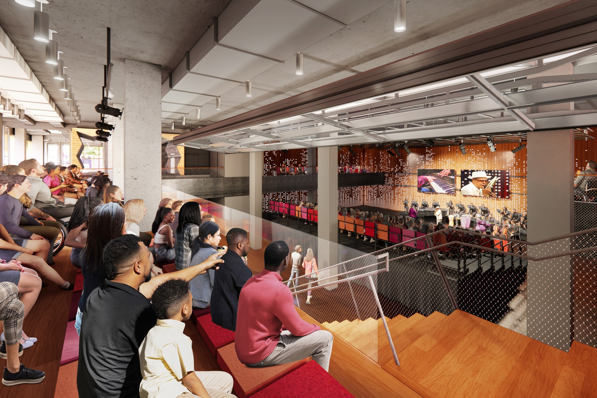

Casa Belongó
2027
Casa Belongó will be the future home of Belongó (aka the Afro Latin Jazz Alliance), a non-profit organization dedicated to advancing the appreciation of Afro Latin artistic and cultural heritage through performance, education and preservation programs. As the cultural partner in a 341-unit affordable housing project in East Harlem, Casa Belongó will offer a welcoming space to experience artistic expression, promote cultural discourse and strengthen bonds for the East Harlem community, New York City and beyond. The new venue will include a rehearsal space, classrooms, meeting spaces, a café, and a flexible, openable, performance hall that is visually accessible from Park Ave.

For more information, visit www.afrolatinjazz.org/casa-belongo
Project Information
Alliance (ALJA)
East Harlem
New York, USA
Credits
Diller, and Benjamin Gilmartin
Ju, and Dino Kiratzidis